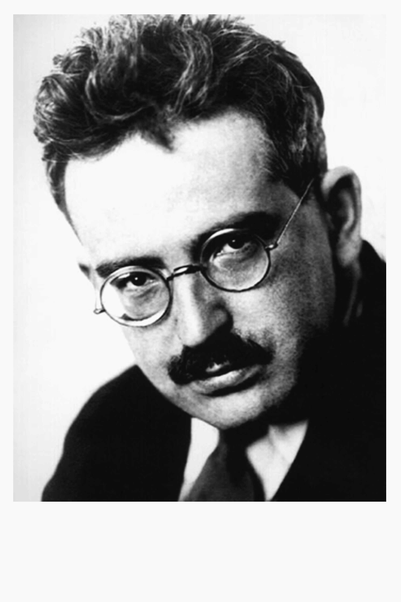

New Media, Old Theory

Intro
New Media, Old Theory
Thursday, August 29, 2013
The question of a new media is an old one.
We could begin anywhere in the history of mankind and its relations with techné, interactions with the world, creation of tools, etc. Yet with the electrification of our world and increasing speed of information tranfer, we sense a categorical difference in our media. And this begs the comparative question, are these new media different from older ones? A difference, one that begs (yet again) the presentist question of modernity—is now different than then. How?
If we believe in that media deeply effect meaning making, how do we articulate this without appearing as apparatus determinists? This question is another way of saying, media may matter, but media are not the sum total of a message.
Walter Benjamin is a convenient theorist with which to begin (not just because of his iconic status (now a multimedia celebrity appearing on t-shirts) but because his turning toward thinking about media was both engaged in a long history of philosophical discussion on mediality but also coincided with the advent of some of the most familiar new media of the twentieth century (telephones, films, newspapers, 3-D photography).
If as Benjamin wrote in his notebook, "the art of the present is geared toward becoming worn out" or it was in film “that the work of art is most susceptible to becoming worn out," what might this say about our ephemeral internet ephemera which both in there instant mass-fication and global-ization (in terms of circulation) obtain a sort of universality only dreamed of in previous generations, yet in their digital form are stored on servers beyond our control and subject to erasure and distortions beyond our wildest intentions? Are we now only interested in the ephemeral? Or can we only see the ephemeral as permanent because we are all presentists at heart, as we find it at once so natural that what is happening today (new media) is so different from the past and obvious that what is happening now could not possibly vanish in an (queue the sci-fi action adventure trope (electro-magnetic pulse’s)) instant.
How does Benjamin’s claim that the older generation’s (his father’s) reaction to the new media of the telephone was significantly different to his own? When Benjamin himself “obeys the voice that takes possession of him from beyond the grave,” his father seems to rail against the faceless operators. Is this related to the claims that cell phone use and particularly texting is changing youth culture today (Claims that today’s youth are distracted/entertained)?